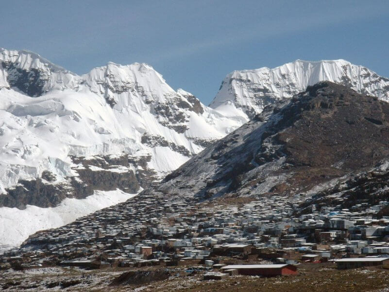
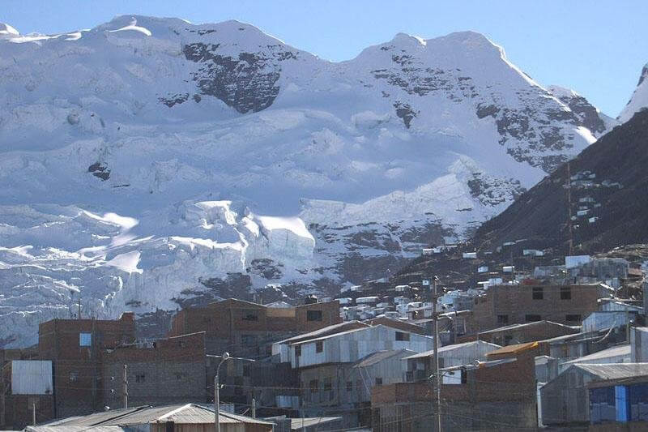
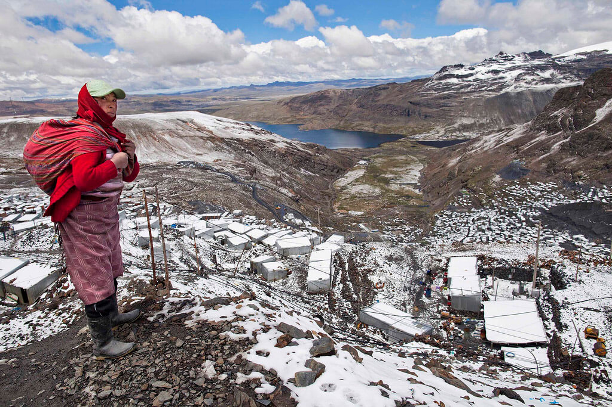
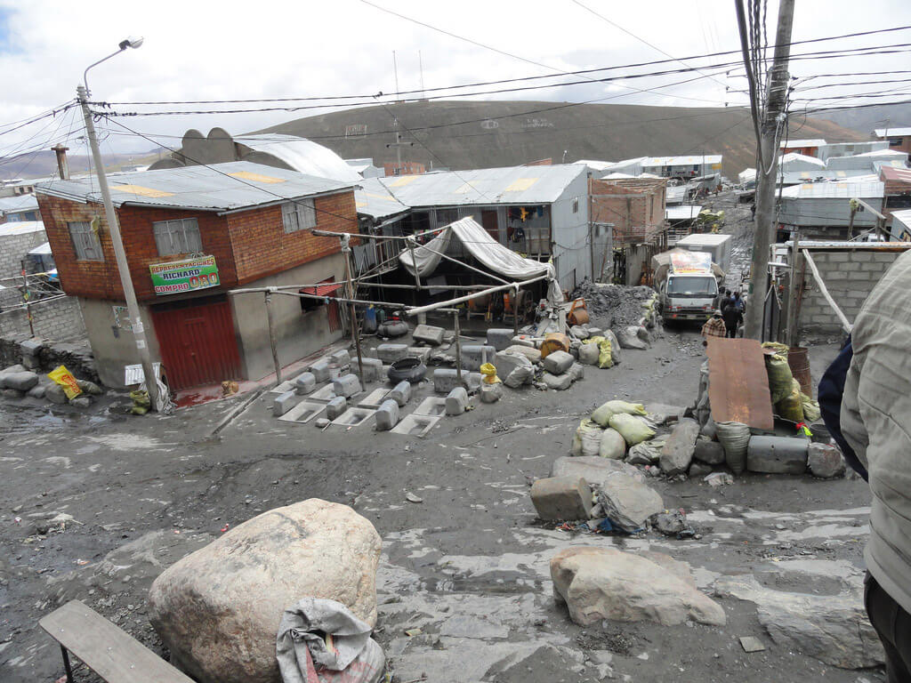
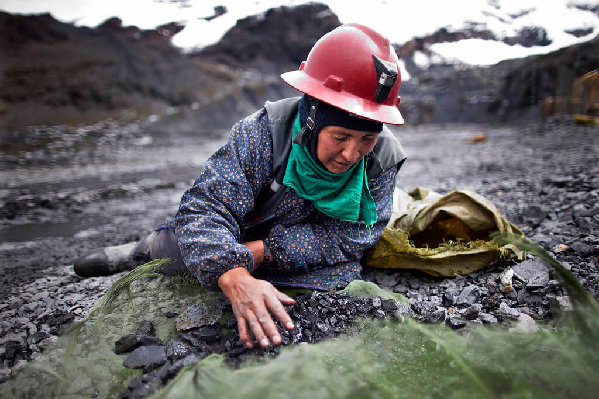
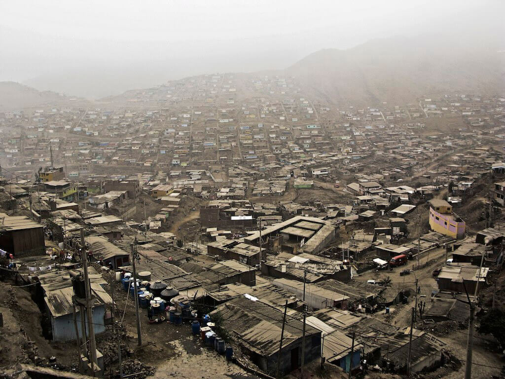
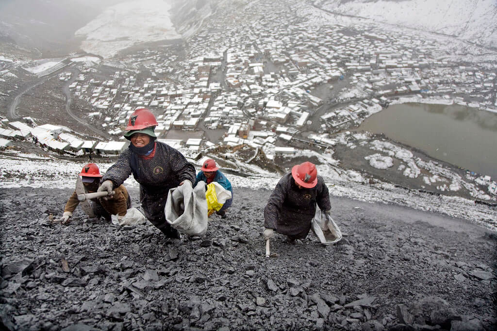
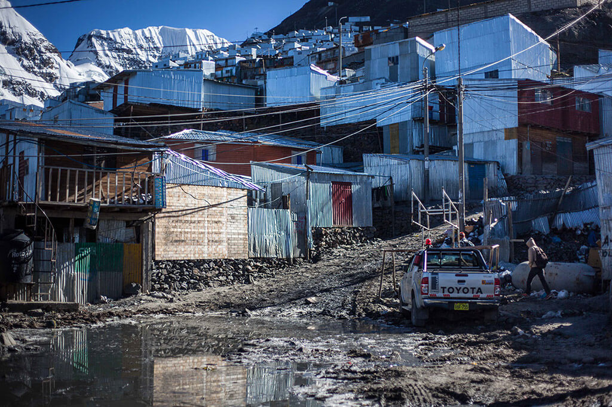
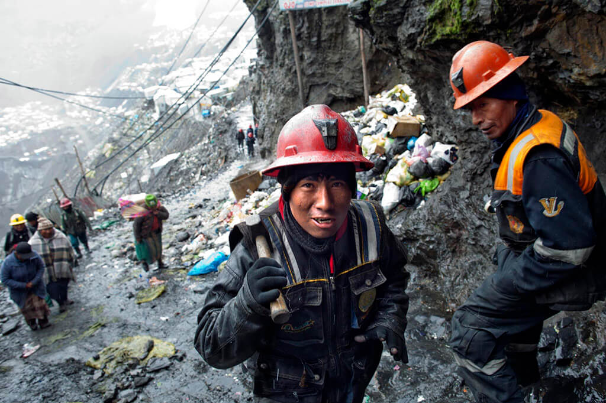

Одно из самых экстремальных поселений в мире находится в Перу, город Ла-Ринконада расположен в Альпах, на высоте 5 100 метров над уровнем моря. Этот миниатюрный городок считается самым высоким населенным пунктом на планете, он был основан переселенцами, которых привлекли в эти труднодоступные места обнаруженные запасы золотой руды. Несмотря на то, что на такой высоте очень тяжело жить из-за разреженного воздуха и суровых климатических условий, население города Ла-Ринконада все равно неуклонно растет.

В городе не развита система канализации и подачи воды, а добраться сюда можно лишь по узкой горной дороге.
Добыча золота в местных шахтах ведется в тяжеленных условиях. Многие горожане весь месяц трудятся бесплатно, а в последний день месяца они получают право забрать из шахты столько руды, сколько смогут унести.
При таких условиях оплата в среднем составляет 150-170 USD в месяц, однако попадаются и «джек-поты», при которых зарплата может достигнуть 1000 USD, и неудачи, при которых можно заработать 30 USD.

После проведенных исследований специалисты в очередной раз отметили, что жить в городе опасно для здоровья, и не только из-за отсутствия системы сточных вод и невысокого содержания кислорода в воздухе.
При разработке золотых месторождений в окружающую среду попадает ртуть, испарения которой тоже несут непоправимый вред здоровью.

За годы существования горного поселения его посетили лишь единицы исследователей и случайных путешественников, отыскать этот городок самостоятельно среди бескрайних альпийских пейзажей буквально невозможно.
Примечательно, что первые поселения на месте современного города были основаны еще сотни лет назад, задолго до того, как стало известно о крупных месторождениях золота.

Ла-Ринконада стал «золотой лихорадкой» XXI века. До демографического бума здешние места были малолюдны и населены в основном коренными жителями кечуа и аймара, но в начале 2000-х произошел существенный скачок цен на золото.
Некоторые компании обратили внимание на старую шахту высоко в горах с рудой содержащей золото, после чего решили поспособствовать значительному увеличению добычи и открытию вокруг новых рудников, но при этом оставить примитивный кустарный способ.

Еще в начале 2000-х Ла-Ринконада имел населения 30 тыс. человек, после увеличения добычи и значительной электрификации города на 2012 год постоянное население составило 50 тыс. человек.
Некоторые из работников, ищущих лучшей жизни, не выдерживают здешних условий и покидают эти места, а некоторые закрывают глаза на все происходящие вокруг и остаются тут жить. В здешних местах ресурс человека быстро истощается.
Среднегодовая дневная температура не превышает +1,3° С, сухой климат с частыми снегопадами, крайне тяжелые физические нагрузки, разряженный воздух и загрязненная среда все это послужило тем, что в Ла-Ринконада болезнь легких, повреждение нервной и кровеносной системы, отравление токсичными веществами и почечная недостаточность стало привычным для всех делом.

К примеру экспедиция, которая проходит длительную акклиматизацию перед восхождением на Эверест в базовом лагере, находятся на высоте 5364 метров, что немногим выше чем Ла-Ринконада, где есть постоянное население. Только при всем этом альпинисты в лагере находятся в более-менее состоянии покоя, а Андах работа идет «на износ».
Усложняет работу еще то, что все старатели должны сами себя обеспечивать необходимым снаряжением и спецодеждой, а поскольку сюда приезжают в основном бедное население, то все чем они могут обзавестись, так это лопатой, ручным буром и киркой.

Заработная плата, которую получают старатели, считается приличной как для Перу, а вот тратить ее тут особо не где. Поэтому часть денег рудокопы расходуют на спиртное и публичный дом, который к удивлению, здесь присутствует. Из-за этого Ла-Ринконада очень неспокойный город. Частные драки и поножовщина, возникающие между пьяными старателями, как и венерические болезни, являются обычными делами и особых тревог среди населения не вызывают.
Нормой для здешних мест является мусор, перемешанный с нечистотами и грязью, лежащий на дорогах и обочинах улиц Ла-Ринконада. Вдобавок к этому грунт загрязнен ртутью, оставленной после очистки руды.

Все это стало причиной появления тяжелого и неприятного запаха, который стоит в городе. Даже ветра, дующие от ледников не устраняют отравленный воздух.
Справится с этими условиями жителям помогают листья кокки. Пожевавши их немного спадает усталость, и суровая реальность кажется лучше, чем есть на самом деле.

ВВЕРХ